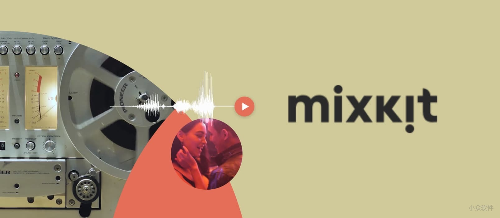

Studying can be hard work, and sometimes all that work makes you tired. But it's important to study hard if you want to be successful and get good grades in school. To stay awake while you're studying, eat healthy foods, stay hydrated, and have a small amount of caffeine if you'd like. You can also try other methods, like napping or exercising to stay alert, and create a study routine that will help you focus.
PNGIMG
http://pngimg.com/
一个提供 PNG 图片素材的网站，跟国内的干库网觅元素类似，但比较好的地方在于，它无需注册登陆也没有每日下载数量的限制，可以无限免费下载。
显卡厂干 ps
分享一些好用的网站
前言
这两年收藏了不少网站，特地整理一下，把一些大家都可能用得上的分享出来，希望能对你有用。
考虑到有一些网站大多数人都知道，所以我就不列出来了。
我把这些网站分为了几大类：
- 工具类
- 素材类
- 社区类
工具类
1、start.me（收藏工具）

它不仅仅是一个网址收藏管理器，它还可以：推送、嵌入任何东西、集成、自定义、分享你的收藏夹、浏览器扩展。
很明显本文所分享的网站就是靠它来保存的，用它的理由两个就够了：
- 可以在不同设备中共享书签。
- 域名好记。
网站链接：https://start.me
2、Placemat（快速生成占位图片器）

如果你是前端，就有可能会遇到需要占位图来填充网页的情况，而 Placemat 就是用来生成占位图的。
最基本的用法是：给定参数w或h，Placemat 会随机返回相应尺寸的图片，其他用法自行探究。
使用 Placemat 的好处显而易见。
网站链接：https://placem.at
3、Carbon（代码界美图秀秀）

这个无需多言，明眼人一看就知道是用来装什么的 :)
4、TinyPNG（在线压缩图片）

图片压缩界的一哥了，支持同时上传多张图片。很好用，压缩率也很高，最重要的是，速度很快。
网站链接：https://tinypng.com
5、两个在线截图工具

BrowserFrame 是一个生成浏览器外壳的网站，它提供了两种方式来生成截图，分别是：
- 上传本地截图
- 输入网址生成截图（可能挂了，经常不成功）
注：推荐另一个功能类似的网站 Screen Guru，它可以实现通过网址生成截图功能，看下图。

这样截图逼格瞬间提升百倍有木有 :)
网站链接1：https://browserframe.com
网站链接2：https://screen.guru
6、ColorSpark（在线随机颜色）

随机生成好看的颜色、渐变色，可以一键复制 CSS 代码。
7、FontSpark（在线预览字体）

随机字体在线预览，用过都说好。
8、easy PDF（在线 PDF 工具）

功能看上图。
素材类
1、觅元素（免抠素材）

在国内算是相对良心的网站了，一天有5次免费下载机会，上面素材质量很高，简直是做 PPT 必备。
2、高清无版权图片网站
这里只列出国内访问速度还算可以的，但是不一一贴图了，有兴趣可以自行查看。
3、UI设计师导航
想看更多的可以去这几个导航看看。
社区类
1、CSS-TRICKS

一个国外的优秀前端开发博客，主要分享使用 CSS 样式的技巧，经验和教程等。值得前端开发者阅读收藏的国外网站。
2、踏得网

算是国内版的 CodePen，其中不乏一些惊艳的动画、特性。
3、免费资源网络社区

免费资源网络社区是一个以免费为主题的台湾网站、部落格，内容包含科技新知、免费软体、线上工具、图库素材、WordPress 架站及应用程式介绍教学。
我不会告诉你上面大多数网站都是从这里看到的。
网站链接：https://free.com.tw
4、前端里

前端里专注于分享最前沿的Web开发技术，教程，资源和素材，是面向网站开发人员和设计师的学习交流平台。
5、伯乐在线

伯乐在线资源收录各种开发、设计、系统管理与安全相关的工具与资源。
Mixkit – 免费可商用的高质量视频素材库
Mixkit 是 envato 旗下的一个提供免费可商用的高质量视频片段与动画的网站，你可以随意取用里面的内容给你自己的视频节目、vlog。
https://mixkit.co/
